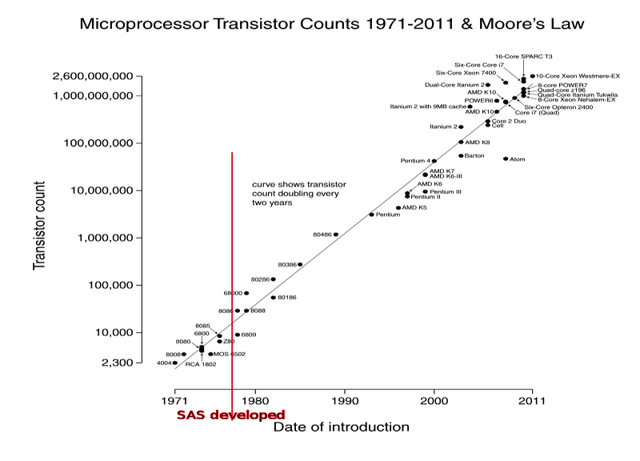

Introduction to SAS
Table of Contents
1 Introduction
1.1 Documents for Today labsetup
- Lab computer log in:
- USERNAME: dataclass
- PASSWORD: on the board to your left
- Download class materials from http://tutorials.iq.harvard.eu/SAS/SASintro.zip
- Includes data, presentation slides, exercises
- Extract (on lab machines right-click ==> WinZip ==> Extract here) and move materials to your desktop!
1.2 Workshop Description
- This is an INTRODUCTION to SAS – assumes no knowledge of SAS!
- Not appropriate for people already well familiar with SAS
- Learning Objectives:
- Import and export data in a varity of formats
- Create and use variable and value labels
- Perform basic data manipulation
- Compoute descriptive statistics
- Wrap-up
1.3 Why SAS?
- If you know SAS, it is likely you will not need any other software packages
- Among the most powerful statistical software packages available
- Great user community: macros, websites, etc.
- Online documentation: http://support.sas.com/documentation/93/index.html
That said, it is my opinion that SAS is not cool. Only use it if you have to…
1.4 SAS history
SAS was first developed in the 1970's. The world was a lot different then! (Image source: http://en.wikipedia.org/wiki/Moore's_law)

1.5 The SAS Environment
- Five basic SAS windows:
- Results
- Explorer
- Editor
- Log
- Output
- Set up your SAS window so it fits your own preferences
- Viewing options (Windows only):
- Window > Tile Vertically
1.6 SAS Basics
- SAS has point-and-click interfaces, but most users write command-driven SAS programs
- Command syntax is not case sensitive, but file names may be
- Commands can run on multiple lines (but you can't split words across lines)
- Follow every command with RUN ;
- Comments can be written as:
/* comment comment comment */OR* comment comment comment;
2 Data Import and Export
2.1 Working With SAS Data
- SAS data sets are stored in files on your hard drive, usually with the extension ".sas7bdat"
- Under Unix/Linux SAS data file names must be all lowercase–best to observe this restriction on Windows as well
- In SAS there is no concept of "opening" a data set–Instead we use libraries to point to directories on the hard drive that contain SAS data sets
- Unless you specify otherwise, SAS copies your data temporarily in a library called "work"
- The work library is temporary, so
- use the work library for temporary data sets
- create and use your own library for any data you wish to save
2.2 Libraries and Datasets
Tell SAS where our data is on our hard drive by creating a library – I'm going to name my library introSAS and point SAS to the dataSets folder
/* initialize a SAS library in the dataSets folder */ LIBNAME introSAS "C:/Users/dataclass/Desktop/SASintro/dataSets"; RUN; /* list sas datasets in the introSAS library / dataSets folder */ PROC DATASETS library=introSAS; RUN; /* initialize a SAS library in the SASintroLib folder */ LIBNAME mylib "C:/Users/dataclass/Desktop/SASintro/SASintroLib"; RUN; /* copy pubschool to the "work" library */ DATA pubschool; SET "C:/Users/dataclass/Desktop/SASintro/dataSets/pubschool"; RUN;
- The DATA command is actually saving our dataset as a new file called "pubschool" in the "work" library
- The SET command is just telling SAS what dataset to save
2.3 What if my file is not a SAS file?
In SAS "import" means "convert to SAS format, copy to library/folder"
- Import Stata files with dbms=dta
/* import from stata format */ PROC IMPORT out = pubschool DATAFILE = "C:/Users/dataclass/Desktop/SASintro/dataSets/pubschool.dta" DBMS = dta replace; RUN;
- Importing ASCII files with (e.g.) dbms=csv
/* import csv file */ PROC IMPORT out = pubschool DATAFILE = "C:/Users/dataclass/Desktop/SASintro/dataSets/pubschool.csv" DBMS = csv replace; GETNAMES = yes; DATAROW = 2; RUN;
2.4 Where is my data?
You can "view" you data in a couple of ways:
- Proc contents
/* list contents of pubschool data */ PROC CONTENTS data = pubschool; TITLE "Public school contents"; RUN;
- Data viewer
- Go to explorer
- Select your "work" library
- Click on your dataset (opens in SAS Universal Viewer)
- Your dataset is named in the library as "pubschool" because that's what you named it when you originally opened the dataset
2.5 How do I get my data out of SAS?
In SAS "export" means "convert to a non-SAS format"
- Exporting CSV files:
/* export to .csv */ PROC EXPORT data = introSAS.ntcs OUTFILE = "C:/Users/dataclass/Desktop/SASintro/SASintroLib/NeighCrime_NEW_EXPORT.csv" DBMS = csv; RUN;
- Exporting tab delimited files:
/* export to tab delimited */ PROC EXPORT data = introSAS.ntcs OUTFILE = "C:/Users/dataclass/Desktop/SASintro/SASintroLib/NeighCrime_NEW_EXPORT.txt" DBMS = tab; RUN;
2.6 Exercise 1: Importing Data
- Create a library named "mylib" in the SASintroLib folder if it doesn't already exist
- Import the Stata file, "ntcs.dta" to the mylib library
- Import the ASCII file, "ntcs.csv" to the mylib library
- Use "proc datasets" to list the datasets in the mylib libary
- Use "proc contents" to review the data you imported in step 2
3 Descriptive Statistics
3.1 Means, standard deviations, etc.
Compute averages for q1 and q2 using proc means
/* means of vars q1 and q2 */ PROC MEANS data = pubschool; VAR q1 q2; TITLE "Public school means"; RUN;
Compute averages for q1 separately by timezone
/* means separatly by timezone */ /* need to sort first */ PROC SORT data = pubschool; by timezone; RUN; PROC MEANS data = pubschool; by timezone; VAR q1; TITLE "Public school means by timezone"; RUN;
3.2 Frequency Tables
Frequency tables for q1 and q2 using proc freq
/* counts of responses to q3, q4, and q5 */ PROC FREQ data = pubschool; TABLE q3 q4 q5; TITLE "Public school frequencies"; RUN;
Frequency tables for q1 by timezone
/* counts by timezone */ PROC FREQ data = pubschool; TABLE q3*timezone; TITLE "Public school frequencies"; RUN;
3.3 Correlation and Regression
We're interested in looking at the relationship between City Crime Rate (C_CRIMRT) and Percent of High School Grads in the City (C_HSGRAD)
/* Scatterplot of relationship between high school graduation rate and crime rate */ PROC GPLOT data = introSAS.ntcs; PLOT C_HSGRAD * C_CRIMRT; TITLE "Percent of High School Graduates and Crime Rates"; RUN; /* correlation between graduation and crime rates */ PROC CORR data = introSAS.ntcs; VAR C_HSGRAD C_CRIMRT; TITLE "Percent of High School Graduates and Crime Rates"; RUN; /* Regression predicting crime rate */ PROC REG data = introSAS.ntcs; MODEL C_CRIMRT = C_HSGRAD C_PERCAP C_POVRTY; TITLE "Percent of High School Graduates and Crime Rates"; RUN;
3.4 Exercise 2: Correlation and regression
Use the ntcs data set
- Take a look around the ntcs dataset and identify an outcome you'd like to predict and few variables (4-6) that you believe would serve as relevant predictor variables
- Run relevant descriptive statistics on your variables and look at histograms and scatterplots
- Test correlations leading up to ultimately testing a regression
- Run and interpret a regression using your selected variables
4 Variable and Value Labels
4.1 Variable and Value Labels
- Variable labels refer to the titles associated with each variable
- Value labels refer to the titles you assign to the different levels (i.e., values) of each variable
- EXAMPLE:
- Variable name: Marital
- Variable label: Marital status of participant
- Value labels: 1 = Married, 2 = Separated, 3= Divorced, 4 = Single, etc.
4.2 Variable Labels
Adding variable labels is a data step command:
/* copy pubschool to pubschool2 and label resp and status */ DATA pubschool2; SET pubschool; LABEL resp = "Participant Identifier" status = "Did participant complete survey?" RUN; /* Check output */ PROC CONTENTS data = pubschool2; TITLE "pubschool2 contents"; RUN;
4.3 Creating Value Labels
Creating value labels is a proc command
- Start by creating the label format
/* create value label named q1label */ PROC FORMAT; VALUE q1label 1 = "best" 2 = "top 5" 3 = "top 10" 4 = "top 20" 5 = "Bottom 80" 9 = "Don't know"; RUN;
4.4 Using Value labels
Now we can use this value scheme creating tables,output, etc.
/* display fequencies, using value labels */ PROC FREQ data = pubschool; TABLES q1; FORMAT q1 q1label.; RUN; /* NOTE: There is a "." after q1label. This alerts SAS that you're referring to a value scheme Saving Value Labels in your Dataset */
We can also save a value label in a data set,
/* add value label to SAS data set */ PROC DATASETS library = work; MODIFY pubschool2; format q1 q1label.; RUN; /* confirm that our formats were correctly applied: */ PROC FREQ data = pubschool2; TABLES q1 q3; RUN;
4.5 Dropping and Renaming Variables
Keeping a subset of variables is simple–use the "drop" or "keep" command:
/* create new dataset "pubschoolKeep" with only q1-q5 */ DATA pubschoolKeep (keep = q1 q2 q3 q4 q5); SET pubschool; RUN; /* create new dataset pubschoolDrop, excluding q1-q5 */ DATA pubschoolDrop (drop = q1 q2 q3 q4 q5); SET pubschool; RUN;
Renameing variables is done in a data step: just put the rename syntax right after your data command
/* change the name of q2 to q2newName */ DATA pubschool2 (rename = (q2 = q2newName)); SET pubschool2; RUN; /* View the dataset: */ PROC CONTENTS data = pubschool2; RUN;
4.6 SAS variable names
- Must be
<=32 characters in length - Must start with a letter or underscore
- Can contain only numbers, letters or underscores
- No special characters:
@#$%^&*
- No special characters:
- Can contain upper and lowercase letters
5 Data Manipulation
5.1 Logic Statements Useful For Data Manipulation
-
=(EQ) - equal to
-
^=(NE) - not equal to
-
>(GT) - greater than
-
<(LT) - less than
-
>=(GE) - greater than or equal to
-
<=(LE) - less than or equal to
-
&(AND) - and
-
|(OR) - or
5.2 Generate New Variables
A data command - simply put new variable name followed by variable condition.
DATA pubschool2; SET pubschool; /* create variable "myvar" equal to q1 */ myvar = q1; /* create variable newvar2 equal to 1 */ newvar2 = 1; RUN;
Create new variable based on values of existing variable
/* generate newvar4 based on q1 */ DATA pubschool2; SET pubschool; if q1=1 then newvar3=1; else if q1=2 then newvar3=2; else if q1=3 then newvar3=3; else if q1=4 then newvar3=4; else newvar3=.; RUN;
5.3 Saving Subsets of Data
Subsets are created with in a data step
- Create a subset of data including only participants who had a child attending a public school
/* keep only rows where q10 is 1 */ DATA CurrentPublic; SET pubschool; if q10=1; RUN;
- Create a subset of data including participants in timezone 1 or 2
/* keep only rows where timezone is 1 or 2 */ DATA CurrentPublic; SET pubschool; if timezone=1 | timezone=2; RUN;
5.4 Missing Values
- SAS's symbol for a missing value is "."
- SAS interprets "." as a small value
- Need to be aware of this when you are manipulating data!
- What will happen when you use the < or <= commands?
5.5 Exercise 3: Data Manipulation
Use the ntcs.sas7bdat
- Attach variable labels using the following codebook:
- REGION = "Region in United States"
- CITY = "Name of City and State"
- Create formats in SAS using the codebook below:
- C_SOUTH: 1 = Southern City, 0=Non-Southern City
- C_WEST: 1=Western City 0=Non-Western City
- Run "proc freq" on C_SOUTH and C_WEST and use formats from step 2
- Assign the formats for C_SOUTH and C_WEST permanently in your ntcs dataset
- Confirm with "proc freq" that your labels were correctly assigned
- Generate new variables based on the city-level crime variables "C_MURDRT" and "C_ROBBRT". Choose values on which to dichotomize each variable and create new variables that have a score of "1" if the original variable is above that value, and a score of "0" otherwise.
- Confirm that your new variables were properly created using "proc freq"
6 Wrap-up
6.1 Help us make this workshop better!
- Please take a moment to fill out a very short feedback form
- These workshops exist for you – tell us what you need!
- http://tinyurl.com/akyvzle
6.2 Other Services Available
Institute for Quantitative Social Science
- www.iq.harvard.edu
Computer labs
- www.iq.harvard.edu/facilities
Data Science Services
- www.iq.harvard.edu/researchconsulting
Training
6.3 Additional Resources
How do I get SAS?
- Your Department IT
- HMDC labs
- RCE (Research Computing Environment)
- Buy it: educational or grad plan
The RCE
- Research Computing Enviroment (RCE) service available to Harvard & MIT users
- www.iq.harvard.edu/research_computing
- Supplies persistent desktop environment accessible from any computer with an internet connection
- Includes SAS, Stata, R etc.